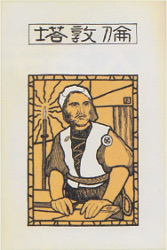

Botchan
坊っちゃん
1906
The most famous and widely read of Sōseki's works, this novel starts with anecdotes from Botchan's rash and reckless school days. The story then shifts into a hilarious account of his ill-fated first job, a teaching assignment far from Tōkyō in "barbaric" small-town Shikoku.
Sanshiro
三四郎
1908
The charming story of Sanshirō, a young man who arrives from the country to study at the University of Tokyo. Passive by nature and just beginning to explore life's possibilities, Sanshirō cautiously samples the offerings of his new environment: the big city, elite academia, and captivating young ladies.
Kokoro
こゝろ
1914
A young student forms a friendship with an enigmatic older man, whom he refers to as 'Sensei.' Over time, and finally through a long confessional letter, the younger man comes to know of Sensei's past and to understand the reasons behind his eccentric demeanor.
I am a Cat
吾輩は猫である
1905
A lost cat takes up residence in the home of a teacher, from where he offers a no-holds-barred commentary on his master, his master's household, the neighborhood, Japanese society, and human beings in general.(Note: This lengthy work is less a novel and more a series of episodes - it can as well be read in pieces as straight through; Chapter 1 was initially written as stand-alone - there is some disconinuity between Chapter 1 and the following chapters)
*Work in process - Chapter 3 (part a) uploaded August 5, 2018

Ten Nights
of Dreams
夢十夜
1908
A series of ten dreams set in various times and touching on various themes:1st night - 100 years' vigil
2nd night - the priest and the samurai
3rd night - child of stone
4th night - the old man with the snake
5th night - racing against the dawn
6th night - rendering Niō
7th night - voyage to somewhere
8th night - the barber shop
9th night - a mother's story
10th night - the demise of Shōtarō

Bunchō
文鳥
1908
A solitary writer, prone to musing on a beautiful woman he once knew, toils away in his cold study to complete a novel. At the urging of a friend, he takes a bunchō (Japanese rice sparrow) as a pet. The story traces his relationship with the bird, from initial apprehension, to fascination, to indifference, and finally, to tragic neglect.

The Tower
of London
倫敦塔
1905
An impressionistic account of the author's sole excursion to the Tower of London during his two years of study abroad in the city. A mix of memories from the visit and fantasies evoked by the sights and sounds and history of the site.
親譲りの無鉄砲で小供の時から損ばかりしている。
小学校に居る時分学校の二階から飛び降りて一週間ほど腰を抜かした事がある。
なぜそんな無闇をしたと聞く人があるかも知れぬ。別段深い理由でもない。
新築の二階から首を出していたら、同級生の一人が冗談に、いくら威張っても、そこから飛び降りる事は出来まい。
弱虫やーい。と囃したからである。小使に負ぶさって帰って来た時、
おやじが大きな眼をして二階ぐらいから飛び降りて腰を抜かす奴があるかと云ったから、この次は抜かさずに飛んで見せますと答えた。
庭を東へ二十歩に行き尽すと、南上がりにいささかばかりの菜園があって、真中に栗の木が一本立っている。これは命より大事な栗だ。
実の熟する時分は起き抜けに背戸を出て落ちた奴を拾ってきて、学校で食う。菜園の西側が山城屋という質屋の庭続きで、
この質屋に勘太郎という十三四の倅が居た。勘太郎は無論弱虫である。弱虫の癖に四つ目垣を乗りこえて、栗を盗みにくる。
ある日の夕方折戸の蔭に隠れて、とうとう勘太郎を捕まえてやった。その時勘太郎は逃げ路を失って、一生懸命に飛びかかってきた。
向うは二つばかり年上である。弱虫だが力は強い。 鉢の開いた頭を、こっちの胸へ宛ててぐいぐい押した拍子に、勘太郎の頭がすべって、
おれの袷の袖の中にはいった。 邪魔になって手が使えぬから、無暗に手を振ったら、袖の中にある勘太郎の頭が、右左へぐらぐら靡いた。
しまいに苦しがって袖の中から、 おれの二の腕へ食い付いた。痛かったから勘太郎を垣根へ押しつけておいて、足搦をかけて向うへ倒してやった。
山城屋の地面は菜園より六尺がた低い。 勘太郎は四つ目垣を半分崩して、自分の領分へ真逆様に落ちて、ぐうと云った。勘太郎が落ちるときに、
おれの袷の片袖がもげて、急に手が自由になった。 その晩母が山城屋に詫びに行ったついでに袷の片袖も取り返して来た。
この外いたずらは大分やった。大工の兼公と肴屋の角をつれて、茂作の人参畠をあらした事がある。人参の芽が出揃わぬ処へ藁が一面に敷いてあったから、
その上で三人が半日相撲をとりつづけに取ったら、人参がみんな踏みつぶされてしまった。古川の持っている田圃の井戸を埋めて尻を持ち込まれた事もある。
太い孟宗の節を抜いて、深く埋めた中から水が湧き出て、そこいらの稲にみずがかかる仕掛であった。その時分はどんな仕掛か知らぬから、
石や棒ちぎれをぎゅうぎゅう井戸の中へ挿し込んで、水が出なくなったのを見届けて、うちへ帰って飯を食っていたら、古川が真赤になって怒鳴り込んで来た。
たしか罰金を出して済んだようである。